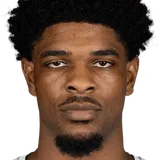

Played 2 seasons for 2 teams; his teams went 3–18 in his games.
Jump to: Record by opponent · Season by season · Teammate help
Compare Ashton Hagans with…
Final NBA finish, season by season
Title Finals Other playoffs Missed playoffs. #1 = champion; the dashed line is last place that season. Each point opens that season's final standings.
All 30 teams ranked in 2020-21, his best finish (#25)Teammate help
 Anthony Edwards0.21 season
Anthony Edwards0.21 season
Career
Career records (W–L, W − L, with and without) include 2026-27 games through Nov. 23, 2026; season counts and finishes are through 2025-26. Each card opens its board in the same scope. How we count.

Latest completed seasons
Season by season
Newest first; every header sorts. Final NBA finish is the team's rank among all teams that season (#1 = champion) and opens that season's standings. "Without him" uses the team-season window; the span line counts only the games between his first and last game for the team.
On/off, starts and close games
From the lineup data, 1996-97 on. On/off is net points per 100 possessions with him on the floor minus off, a different unit from the win-rate gaps. Started and off the bench are team records in those games; close games are those within 5 points in the last 5 minutes with him on the floor.
Teammate help by season
Two separate numbers per season, each with every teammate that adds to it. Help this season = Teammates Score points for honors won that season by teammates who shared a game with him. Help coming in = the same teammates' honors from the season before. How help works.
- 2023-24
 PortlandHelp this season: 0, no honored teammate
PortlandHelp this season: 0, no honored teammate - 2020-21
 Minnesota
Anthony Edwards All-Rookie 1st0.252 g
Minnesota
Anthony Edwards All-Rookie 1st0.252 g
Help this season: 0.25 = 0.25 Anthony Edwards
More: help coming in and other teammates
Help coming in (teammates' honors the season before): 0
Other teammates (no honors that season): Ed Davis 2 g, Ricky Rubio 2 g, Jaden McDaniels 2 g, Naz Reid 2 g, Jordan McLaughlin 2 g, Jarred Vanderbilt 2 g, Josh Okogie 2 g, Jake Layman 2 g, Malik Beasley 2 g, Jaylen Nowell 1 g, Jarrett Culver 1 g
Record against each opponent
Regular season, through 2025-26 (2026-27 games not included): 21 games, 3–18, against 13 franchises.
Grouped by franchise (named as today); game lists keep each team's name that season. Filters and the tab are kept in the URL, so a filtered view can be shared.
| Games list | |||||||
|---|---|---|---|---|---|---|---|
| 3 | 0–3 | 0.0% | −3 | N/A | 2020-21 to 2023-24 | ||
| 3 | 0–3 | 0.0% | −3 | N/A | 2023-24 | ||
| 2 | 1–1 | 50.0% | 0 | N/A | 2023-24 | ||
| 2 | 0–2 | 0.0% | −2 | N/A | 2023-24 | ||
| 2 | 0–2 | 0.0% | −2 | N/A | 2023-24 | ||
| 2 | 2–0 | 100.0% | +2 | N/A | 2023-24 | ||
| 1 | 0–1 | 0.0% | −1 | N/A | 2023-24 | ||
| 1 | 0–1 | 0.0% | −1 | N/A | 2023-24 | ||
| 1 | 0–1 | 0.0% | −1 | N/A | 2023-24 | ||
| 1 | 0–1 | 0.0% | −1 | N/A | 2023-24 | ||
| 1 | 0–1 | 0.0% | −1 | N/A | 2023-24 | ||
| 1 | 0–1 | 0.0% | −1 | N/A | 2023-24 | ||
| 1 | 0–1 | 0.0% | −1 | N/A | 2023-24 |
Rows add up to his career record in his games. A playoff series counts when he played in it; early round-robin games show as games only. How we count.
Arrival and departure
Team wins per 82 games the season before he arrived vs his first season there, and his last season vs the season after he left. He leaves a team only when his next season with games is for another team (or he never plays again); whole seasons he missed and came back from are one "Missed" row with the team's record without him. Per 82 so short seasons compare fairly. These are team records, not a measure of what he did.
| Left | after 2023-24 | 2023-24: 21–61 21.0 per 82 | 2024-25: 36–46 36.0 per 82 without him | +15.0 wins | |
| Arrived | 2023-24 | 2022-23: 33–49 33.0 per 82 | 2023-24: 21–61 21.0 per 82 | −12.0 wins | |
| Left | after 2020-21 | 2020-21: 23–49 26.2 per 82 | 2021-22: 46–36 46.0 per 82 without him | +19.8 wins | |
| Debut | 2020-21 | 2019-20: 19–45 24.3 per 82 | 2020-21: 23–49 26.2 per 82 | +1.9 wins |
With and without his teammates
His 12 teammates with the most regular-season games together. "Together" is the team's record in the games both played for it; "Without him" is the team's record in the games Ashton Hagans played for that team while the teammate was on it (between the teammate's first and last game for the team, the appearance span) and the teammate did not play. Fewer than 20 games without him: no gap. Games through Nov. 23, 2026. How we count.
 Kris MurrayPortland 2023-24
Kris MurrayPortland 2023-24- Together
- 3–16 15.8%
- Without him
- N/A N/A
- Gap
- Too few games without him
 Dalano BantonPortland 2023-24
Dalano BantonPortland 2023-24- Together
- 3–14 17.6%
- Without him
- 0–1 0.0%
- Gap
- Too few games without him
 Jabari WalkerPortland 2023-24
Jabari WalkerPortland 2023-24- Together
- 3–14 17.6%
- Without him
- 0–2 0.0%
- Gap
- Too few games without him
 Duop ReathPortland 2023-24
Duop ReathPortland 2023-24- Together
- 3–14 17.6%
- Without him
- 0–2 0.0%
- Gap
- Too few games without him
 Toumani CamaraPortland 2023-24
Toumani CamaraPortland 2023-24- Together
- 2–12 14.3%
- Without him
- 0–2 0.0%
- Gap
- Too few games without him
 Matisse ThybullePortland 2023-24
Matisse ThybullePortland 2023-24- Together
- 2–10 16.7%
- Without him
- 0–4 0.0%
- Gap
- Too few games without him
 Rayan RupertPortland 2023-24
Rayan RupertPortland 2023-24- Together
- 3–8 27.3%
- Without him
- 0–8 0.0%
- Gap
- Too few games without him
 Anfernee SimonsPortland 2023-24
Anfernee SimonsPortland 2023-24- Together
- 2–9 18.2%
- Without him
- 0–2 0.0%
- Gap
- Too few games without him
- Justin MinayaPortland 2023-24
- Together
- 0–11 0.0%
- Without him
- 3–5 37.5%
- Gap
- Too few games without him
 Jerami GrantPortland 2023-24
Jerami GrantPortland 2023-24- Together
- 2–8 20.0%
- Without him
- 0–2 0.0%
- Gap
- Too few games without him
 Deandre AytonPortland 2023-24
Deandre AytonPortland 2023-24- Together
- 1–9 10.0%
- Without him
- 2–7 22.2%
- Gap
- Too few games without him

Scoot HendersonPortland 2023-24- Together
- 1–8 11.1%
- Without him
- 2–8 20.0%
- Gap
- Too few games without him